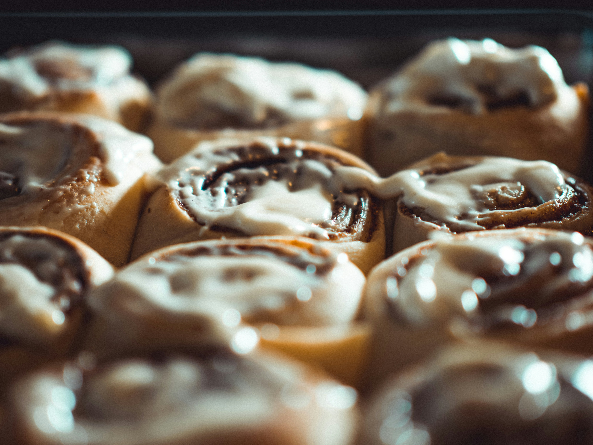

Cinnamon Rolls:
Cinnamon Rolls are a world-wide delicacy. From the fluffy exterior of the bread to the flavour-packed cinnamon sugar interior, they are enjoyed by many! What’s not to love? Although we don’t know exactly where this delightful dish originated from, food historians have come to the conclusion that the Northern Europeans formulated this beloved Desert! This mouth-watering desert was definitely inspired by German, Danish and Swedish baking techniques.
Recipe:
Here is everything you will need to make these incredible Cinnamon Scrolls:
- Makes: 8
- Cook Time: 20 Minutes
- Prep Time: 2 Hours
- Total Time: 2 Hours 20 Minutes
Cinnamon Bun Dough:
- ¾ Cup of Warm, Full Cream Milk
- 2 1/4 Tsp Instant Yeast
- ¼ Cup Castor Sugar
- 1 Egg + 1 Egg Yolk
- ¼ Cup Salted Butter, Melted (not hot)
- 3 Cups Bread Flour + Extra for Dusting
- ¾ Tsp Salt
Cinnamon Sugar Filling:
- 2/3 Cup Dark Brown Sugar
- 1 ½ Tbs Powdered/Ground Cinnamon
- ¼ Cup Butter (Softened, Not Melted)
Cream-Cheese Frosting:
- 60g Cream Cheese (Softened)
- 3 Tbsp Butter (Softened, Not Melted)
- ¾ Cup Icing/Powdered Sugar
- ½ Teaspoon Vanilla Extract
Method:
- Warm the milk using a stove or microwave until the milk is WARM to the touch. It should not be hot (around 40-45 Seconds). Transfer the warm milk to your mixing bowl and add the yeast, sugar, egg, egg yolk and melted butter. Mix well until combined. Mix in the salt and flour, mix until the dough begins to form.
- If you are mixing the dough by hand, transfer it to a floured surface and knead well until a slightly sticky dough ball forms. If you’re using a stand mixer, transfer to a dough hook and mix dough until it comes together (around 5-7 minutes).
- Transfer the dough to a well-oiled bowl. Cover with plastic wrap and leave to rise in a warm place for 1 ½ hours. Or until the sough has doubled in size. This time can vary depending on the conditions in your home.
- Once the dough has risen, transfer to a floured surface and roll out to a 15x10 inch rectangle. Cover the surface of the dough with the softened butter. Leave ½ an inch on the 10-inch sides to allow dough to bind to itself.
- In a bowl, mix together the Brown Sugar and Cinnamon. Once combined, sprinkle all over the dough in an even layer. Make sure to properly cover the dough, you don’t want any un-covered parts! Make sure to gently rub the dough into the dough.
- Tightly roll the dough up into a cylinder, starting from the 10-inch side. Making sure to seal the edges as best as you can, that way the dough stays together!
- Cut the dough into 8 equal rounds. Place the dough rounds in a baking paper-lined, 10x10 inch baking pan or a 10-inch cake pan. Cover with a tea-tow/plastic wrap and allow to rise once more in a warm area for 45 minutes to an hour.
- Preheat oven to 180 degrees C (350 Degrees F). Remove the plastic wrap/towel and bake the buns for 20-25 minutes, or until slightly golden brown. Allow them to cool for 5-10 minutes before frosting.
How to make the Frosting:
- In an electric mixer bowl, combine the cream cheese butter, icing/powdered sugar and vanilla extract. Mix until smooth and fluffy, spread over cinnamon buns, either serve immediately or store in fridge.

Helpful Tips:
- Don’t Over-heat the milk, if your milk is too hot, it will most likely kill your yeast, which means you dough wont rise. It should feel warm, like bath water. You should be able to hold your finger in the milk without it burning.
- Rub the brown sugar into the butter! If you rub the sugar in it will ensure its all well combined and so it stays put! it won’t fall out when you put the dough round on its side.
- Use a sawing-motion when cutting the dough! When cutting the dough rounds, use a normal knife (not curated), but when cutting don’t just push down, use a sharp knife, don’t apply much pressure and just move the knife back and forth. It will ensure a clean cut that doesn’t deform the perfect circular shape of the roll.
- Use room temperature eggs. This way when you add them to the warm milk, it keeps the milk warm for the yeast. If the milk goes cold, it will cause the yeast to not activate!
- Use bread flour!! Bread flour is available anywhere you can buy normal flour; however, bread flour ensures a nice, fluffy, well risen dough, USE BREAD FLOUR!!
- Flour your surfaces! If you don’t flour your table/rolling pin when you kneed/roll out the dough, it will make your life very difficult. Make sure to use flour to make sure your dough doesn’t stick.